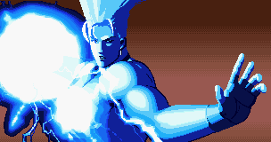
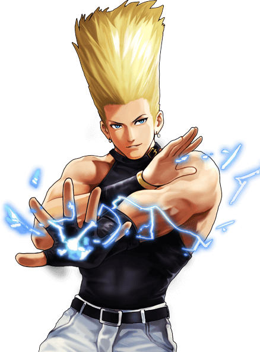
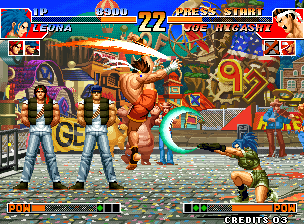
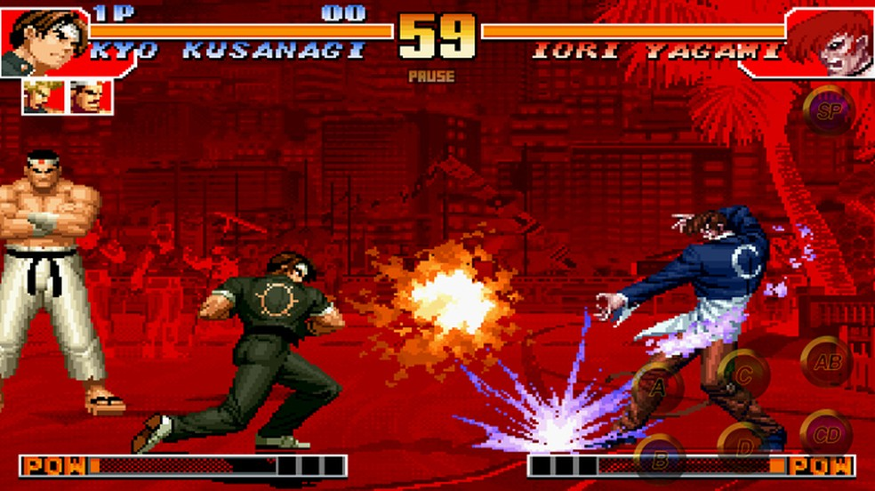

The King of Fighters '97, ou KOF 97, é o quarto jogo da franquia The King of Fighters. Este jogo tem a introdução de dois modos de especiais- Advance Mode (baseado em KOF '96) e Extra Mode (com base em KOF '94 e '95). Ela é a conclusão da Saga Orochi terminando com a batalha final entre os Tres Tesouros Sagrados e o poderoso Orochi.
 Os fãs foram convidados a votar em seus personagens favoritos para adicionar na série através de três revistas de games: Famitsu, Gamest, e Neo Geo Freak. Os três vencedores formaram o '97 Special Team. As revistas também criaram suas próprias special edit teams para incluir no jogo.
Este jogo foi lançado para Arcade, Neo Geo, PlayStation, Sega Saturn e Neo Geo CD. Esse jogo também foi lançado para iOS e Android em 14 de Novembro de 2013.
ENREDO
O torneio KOF '96 chegou a um fim com o incidente que ocorreu logo após o final do torneio. Incidente este que foi o causador de um acidente que foi reportado oficialmente como um ataque terrorista por um grupo desconhecido, mas os detalhes sobre a identidade, motivos e de onde são permaneceram um mistério.
 Entretanto, apesar do incidente, o KOF '96 foi um grande sucesso comercial. Alguns meses depois, o evento iniciou uma enlouquecida mania de luta e várias grandes corporações, expressão o seu interesse na novidade, ofereceram patrocinar o torneio subsequente, levando a uma demanda que traria até o aguardado KOF '97. A novidade alcançou todos ao redor do mundo e em pouco tempo o KOF '97 começaria.
Chizuru Kagura, a sub-chefe do jogo anterior, toma o lugar de Kasumi no Women Fighters Team, enquanto o subordinado de Geese Howard, Billy Kane, que participou anteriormente do KOF '95, retorna para juntar forças com a agente feminina Blue Mary e o criminoso procurado Ryuji Yamazaki (ambos de Fatal Fury 3) para formar o inesperado '97 Special Team.
Iori Yagami retorna como um personagem solo junto com Shingo Yabuki, um estudante do ensino médio que tem o padrão de luta parecido com o seu ídolo e mentor relutante Kyo Kusanagi. Uma versão alternativa de Kyo com os seus movimentos pré KOF '96 também aparece como personagem secreto.
Iori e Leona lutam como sub-chefes na forma de "Sangue da Manifestação", dependendo de quais personagens você estiver usando no seu time. Um time de novos personagens chamados de New Faces Team, consistindo nos amigos de uma banda chamados Yashiro Nanakase, Shermie e Chris também estão no jogo. Depois é revelado que eles são os 3 últimos serventes de Orochi. Depois que eles aumentam os seus poderes, eles se transformam em sub-chefes antes da batalha final contra Orochi.
Fonte: Fandom - Nostallgia Brasil